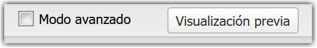
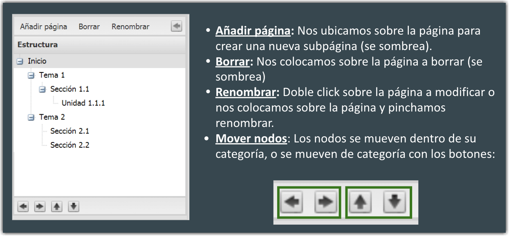

Entorno de trabajo
Al abrir eXe se nos presenta una ventana de preferencias donde podremos elegir el idioma de la aplicación y el navegador que utilizará. Esta ventana aparecerá cada vez que ejecutamos la herramienta, pero podemos evitar que nos vuelva a aparecer desmarcando la casilla que aparece en la misma ventana abajo a la derecha.
Una vez dentro de la aplicación, este será el entorno en el que nos moveremos:
Diferenciamos 4 partes que veremos a continuación: la barra de Menú principal, el panel de Estructura, el panel de iDevices y el área de trabajo. En la barra de direcciones aparecerá una URL similar a esta: "http://localhost:51235/NewPackage". Se trata de una URL local, como ya dijimos anteriormente, y por tanto no se puede compartir.
Barra de menú
En esta barra aparecen los menús de Archivo, Utilidades, Estilos y Ayuda. Las opciones que más usaremos habitualmente se encuentran en el menú Archivo: Nuevo, Abrir y Guardar. Al final de nuestro trabajo también utilizaremos al opción de Exportar.
En la parte derecha encontramos la opción de Modo Avanzado (que muestra más opciones en los menús, como veremos al final del curso) y un botón que nos permitirá tener una visión previa del contenido que estamos creando.

Por ahora trabajaremos sin marcar el Modo avanzado.

Panel de Estructura
En este panel crearemos la estructura general de nuestro recurso, añadiendo tantas páginas (nodos) y niveles jerárquicos como necesitemos. En la parte superior tenemos las opciones de Añadir página, Borrar y Renombrar. En la parte inferior están situados los botones para reordenar las páginas, moviéndolas arriba o abajo dentro del nivel en el que se encuentran, o subiendo y bajando de nivel.

Existe además la opción de ocultar este panel haciendo clic en el botón situado arriba a la derecha.

Panel de iDevices
Como hemos dicho, los iDevices son elementos o bloques que nos permiten incluir diversos tipos de contenidos y actividades en nuestro material. Cada página de nuestro recurso creado con eXe estará formada por uno o varios iDevices.
En función del contenido que queramos incluir, elegiremos uno u otro iDevice. Estos están agrupados en tres categorías:
- Texto y tareas: iDevices que constan de un editor de texto en el que se pueden incluir textos, imágenes, vídeos, notación musical y matemática, elementos embebidos... Opcionalmente se puede añadir un título, un icono y una caja de retroalimentación. En el iDevice de Tarea, además, se pueden incluir la temporalización y el agrupamiento. En el iDevice Contenido DUA se pueden crear materiales desde la perspectiva del Diseño Universal del Aprendizaje.
- Actividades interactivas: iDevices con actividades interactivas como Verdadero/Falso, Rellenar huecos, Lista desordenada, Actividad de Geogebra, vídeo interactivo...
- Juegos: actividades interactivas dirigidas especialmente a juegos.
- Otros contenidos: Incluye otro tipo de iDevices como Archivo adjunto, Galería de imágenes, Rúbrica...

Área de trabajo
El área de trabajo tiene dos pestañas: Contenido y Propiedades.
Contenido
Esta es la pestaña que aparece seleccionada por defecto, y es donde vamos a ir añadiendo nuestro contenido. Para ello iremos seleccionando el iDevice que necesitemos, haciendo doble clic sobre él. Este aparecerá en el área de trabajo en modo edición y podremos trabajar en él, añadiendo el contenido que queramos.
Propiedades
En esta pestaña añadiremos la información básica del recurso que vamos a crear: título, idioma, descripción general, autor y licencia. Estos datos son fundamentales para describir nuestro material y poder catalogarlo correctamente en repositorios y plataformas. En Modo Avanzado se abre todo un mundo de posibilidades de catalogación que veremos en el último apartado del curso.

Obra publicada con Licencia Creative Commons Reconocimiento Compartir igual 4.0